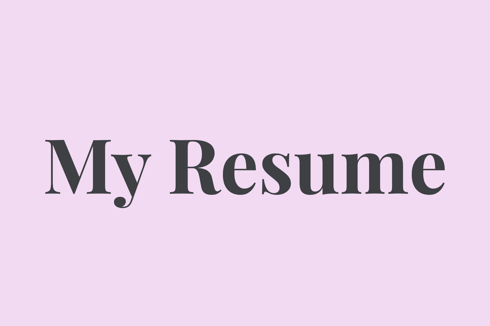
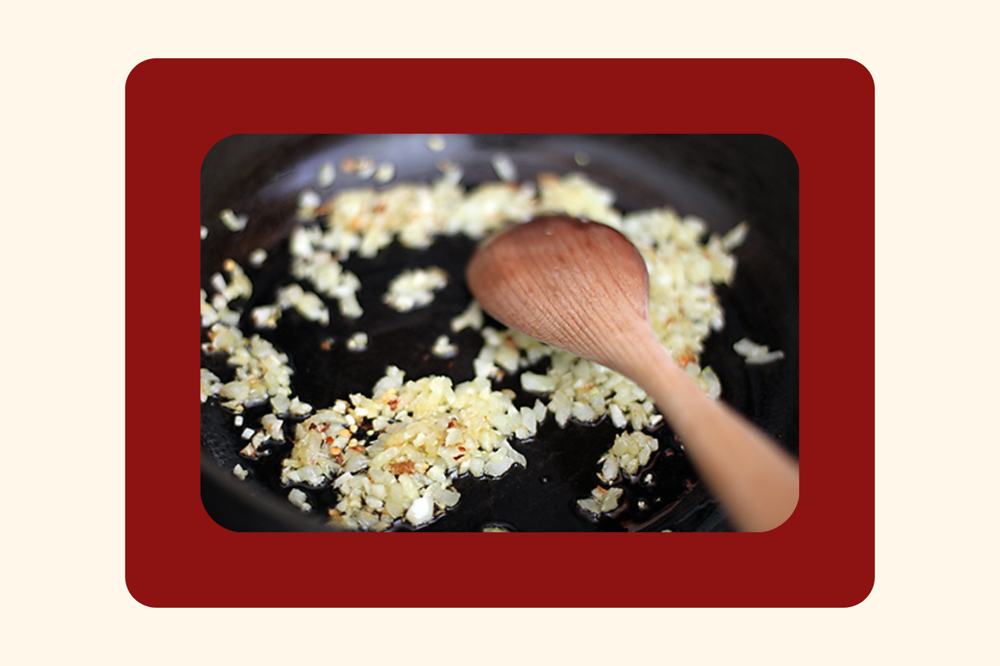
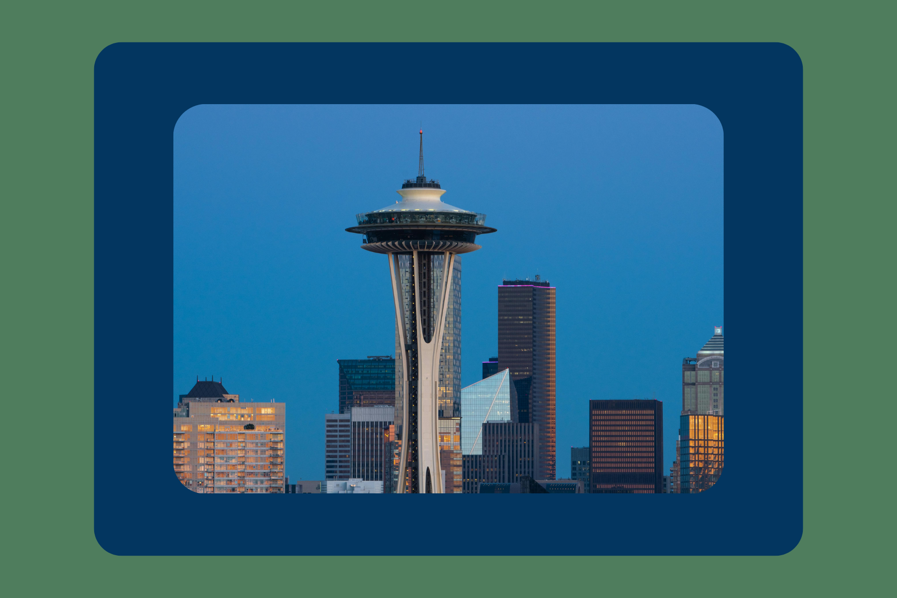
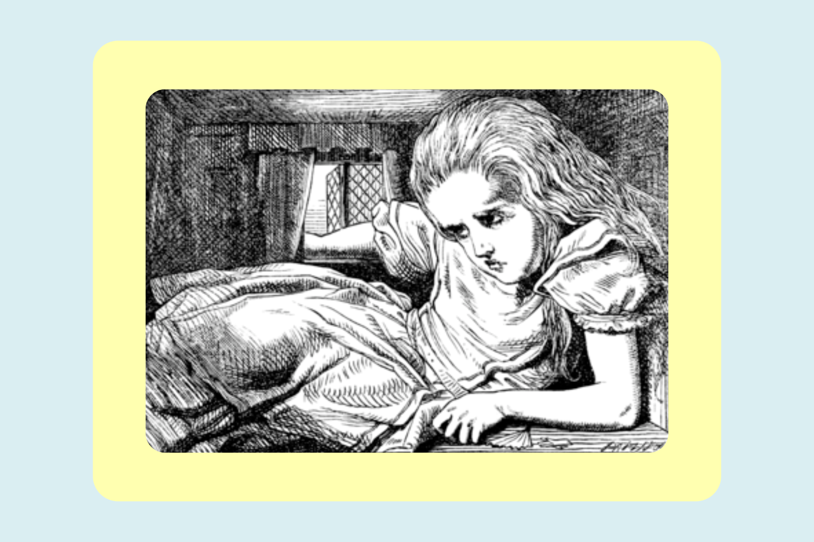

I built a clean, single-page resume with clear hierarchy, left-aligned body text, and a max line width around 50em for readability.
Navigation is simple and the content is scannable for recruiters and clients.
- Focus: Readability, semantic structure, contact clarity
- Tech: HTML5, CSS3, Google Fonts
- Next step: Add print-friendly styles and dark mode
Image source: Self-created SVG placeholder. License: CC0.
View live ·
Source on GitHub

I practiced building a responsive layout that adapts across breakpoints using Flexbox. I emphasized accessible headings,
descriptive link text, and strong contrast to support usability.
- Focus: Responsive patterns, component structure, contrast
- Tech: HTML5, CSS3 (Flexbox)
- Next step: Add reduced-motion handling and prefers-color-scheme
Image source: Self-created SVG placeholder. License: CC0.
View live ·
Source on GitHub

I created a minimal multi-page site to explore navigation patterns using Flexbox. Internal links stay in the same tab
and external links open in a new tab with rel="noopener noreferrer".
- Focus: Navigation usability, link semantics, consistency
- Tech: HTML5, CSS3 (Flexbox)
- Next step: Improve focus outlines and add skip links
Image source: Self-created SVG placeholder. License: CC0.
View live ·
Source on GitHub

I focused on typography and reading comfort: left-aligned body copy, tight heading hierarchy, and consistent line-height near 1.5.
This project showcases careful text rhythm and image alt text that explains purpose, not just appearance.
- Focus: Typography, hierarchy, alt text quality
- Tech: HTML5, CSS3, Google Fonts
- Next step: Add figure captions and a contents sidebar
Image source: Self-created SVG placeholder. License: CC0.
View live ·
Source on GitHub